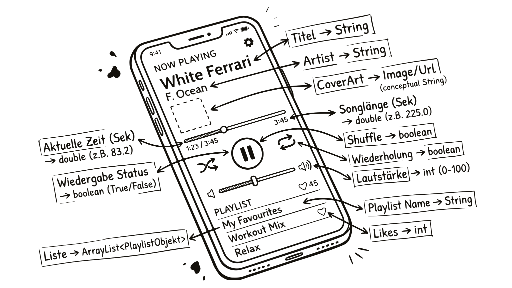

Look at what you have been typing since Chapter 2: name, parentheses, value in between, println(age). That is how you call a method. Someone else wrote println. In the next chapter you build your first one of your own.
Chapter 3 of 11 · Type, name, value
Variables & data types
You can think of a variable as a box with a label: the label shows the type and name, the value is inside the box. The type decides what fits inside.
THE PROBLEM
A movie ticket now costs €13 instead of €12. Someone updated the program. Are the prices right?
Cinema.java
System.out.println("1 ticket: " + 13 + " euros");
System.out.println("2 tickets: " + 2 * 13 + " euros");
System.out.println("3 tickets: " + 3 * 12 + " euros");
CONSOLE
3 tickets for €36? The price appears three times in the code, and one spot was missed.
Cinema.java
int price = 13;
System.out.println("1 ticket: " + price + " euros");
System.out.println("2 tickets: " + 2 * price + " euros");
System.out.println("3 tickets: " + 3 * price + " euros");
CONSOLE
Now the price appears in exactly one place. If it changes, you change one line. This chapter shows how variables work.

After this chapter you can
- declare variables and assign values to them, for each of the types
- tell the most important data types apart:
int,double,boolean,char,String - estimate the value range of a type and say what happens on an overflow
- nail down constants with
final - calculate with variables and then know the nastiest division trap in all of Java
- switch the type of a value with a cast and defuse the division trap with it
- read the shorthand forms
+=and++and apply operator precedence
3.1 Declaring variables and assigning values
Programs need to remember things: scores, names, prices. That is what variables are for: named storage locations, each holding one value.
STRUCTURE · CLICK A PART
type name = value;First the type, meaning which values the variable can hold, then its name, after the = the value. Later you assign a new value without the type: age = 21;.
Type: determines which values the variable can store:
int for integers, double for decimal numbers, String for text. It appears only in the declaration. If you write it before the same name a second time, the compiler reports variable age is already defined.Name: freely chosen, starts with a lowercase letter, no spaces. Every further word starts with a capital letter:
zombieCount. Case matters, age and Age are two different variables.The equals sign is the assignment operator: the value on the right is stored in the variable on the left. That is why the variable is always on the left:
age = 20;, not 20 = age;.Value: must match the type, for example
20 for int, 4.99 for double (with a decimal point, not a comma) or "Aylin" for String. A calculation may also appear on the right, for example age + 1.The semicolon ends the statement, like every statement in Java. If it is missing, the compiler reports
';' expected.how it works
int age = 20;
// ^ ^
// | '-- the value that goes into the box
// '-- the name of the box (you choose it)
//
// and right at the front: the TYPE, what the box may holdThis one line does three things at once:
LINE BY LINE
int | Declaration: Java creates a variable for integers (int). |
age | Naming: The variable is called age. |
= 20; | Assignment: It gets the value 20. |
Remember this
= does not mean “equals”, but “take the value on the right and store it in the variable on the left”. That is why age = age + 1; is perfectly fine: read the old value, add 1, store the result back in age.
Explained differently: one variable, one valueoptional
Every variable has a fixed type and a name, and it always stores exactly one value.
int number = 20;→ Java creates anintvariable namednumberand stores the 20 in it.number = 99;→ The 99 overwrites the 20. One variable, one value.number = "ninety-nine";→ Text does not fit the typeint. The compiler reportsincompatible types.
Mini exercise to practice: which type fits? Fill in the blanks:
Uebung.java
zombieCount = 12;
brainCost = 3.49;
isFull = false;Assignment puzzle: Are x and y linked?
y gets the value of x, and then x changes. Are the two variables linked now? Guess first, then run:
Kopie.java (excerpt)
int x = 5;
int y = x; // y gets … well, what exactly?
x = 10; // x changes …
System.out.println(y); // … and y?
CONSOLE
Answer: run it first, then expand it!
y stays at 5: it got a copy of the value and is not tied to x. Assignments copy values, not connections. (Remember this: In Chapter 9 it is different.)
3.2 Basic data types
Every variable has a type, and it determines what fits inside: integers, decimal numbers, yes or no, a single character or text. You start with these five.
DieBigFive.java
int points = 1337; // integers
double price = 4.99; // decimal numbers (with a POINT, not a comma!)
boolean hunger = true; // only true or false
char grade = 'A'; // ONE single character, in 'single' quotes
String name = "Aylin"; // Text, in "double" quotesint: integers: age, score, number of coffees today (4)double: decimal numbers: prices, grades, temperaturesboolean: yes/no questions: logged in? adult? Wi-Fi available?char: a single character: 'A', '?', '7'String: text of any length: names, messages, passwords (please not in plain text)
Level-up: Why is String capitalized?optional
int, double, boolean, char are primitive types, plain values. String is a class, an object with built-in methods:
StringKannWas.java
String name = "Aylin";
System.out.println(name.length()); // 5, how long is the text?The dot after name is a method call. Chapter 5 shows the most important ones, and Chapter 9 covers classes and objects.
3.3 Value ranges of the data types
Every type occupies a fixed number of bytes. What does not fit, does not fit. That is why there is long for numbers beyond roughly 2 billion.
| type | Size | Value range |
|---|---|---|
int | 4 bytes | −2,147,483,648 to 2,147,483,647, just under ±2.1 billion |
long | 8 bytes | about ±9.2 quintillion, for everything that does not fit into an int |
double | 8 bytes | huge, but not arbitrarily precise |
boolean | 1 bit | true or false, usually 1 byte in memory |
char | 2 bytes | exactly one character |
And at the limit? Nothing loud happens. That is exactly the problem:
Limit.java
public class Limit {
public static void main(String[] args) {
int big = 2147483647;
System.out.println(big);
System.out.println(big + 1);
}
}
CONSOLE
LINE BY LINE
int big = 2147483647; | the largest value that fits into an int. |
System.out.println(big); | prints it unchanged. |
System.out.println(big + 1); | One more does not fit. Java reports nothing, the value wraps around to the lower end of the range: -2147483648. |
Remember this
- An
intoverflows at just over 2.1 billion and wraps into the negative: no crash, no message, just a wrong number. A logic error (Chapter 1). - For anything that can get big, you use
long: population figures, large amounts in cents, timestamps in milliseconds. - Large numbers in source code need an
L:long population = 8200000000L;. Otherwise the compiler reportsinteger number too large.
Level-up: Where do the 2,147,483,647 come from?optional
4 bytes are 32 bits, so 32 switches. One carries the sign, 31 remain for the magnitude: 2 to the power of 31 minus 1 = 2,147,483,647. Worked out, not made up.
You can also work with the bits directly. Two operators shift them:
Bits.java
public class Bits {
public static void main(String[] args) {
int eight = 1 << 3;
int two = 8 >> 2;
System.out.println(eight + " " + two);
System.out.println(Integer.toBinaryString(10));
System.out.println(Integer.MAX_VALUE);
}
}
CONSOLE
1 << 3: 00000001 becomes 00001000, so 8. Each place to the left doubles, to the right halves (and cuts off). In everyday code you multiply with *, but this explains why memory sizes are 8, 16, 32, 64.
Level-up: There are more number types (and a famous overflow)optional
All number types at a glance: byte (tiny), short (small), int (default), long (huge), float (decimal, less precise), double (decimal, default).
Fun fact: In 2014 YouTube had to switch the counter of “Gangnam Style” to long, because the video exceeded the int limit.
3.4 Constants with final
Some values are fixed: VAT, maximum occupancy, number of weekdays. A normal variable could be overwritten in any line, even by accident. final forbids that.
STRUCTURE · CLICK A PART
final type NAME = value;A completely normal declaration, just with final in front.
final turns the variable into a constant: after the first assignment its value can no longer be changed. The compiler rejects a later VAT = 0.07;.Type: as with any variable, for example
double for a tax rate like 0.19 or int for the number of weekdays.NAME: You write constants in all caps, with multiple words separated by underscores:
VAT, MAX_RESIDENTS. The compiler does not require this, but it lets you see at a glance while reading that the value does not change.Value: is assigned right at the declaration and stays the same afterwards. If the tax rate does change someday, you change it in exactly this one place in the code.
a constant
final double VAT = 0.19;LINE BY LINE
final | makes the variable unchangeable. A later VAT = 0.07; does not even compile: cannot assign a value to final variable VAT. |
double VAT = 0.19; | otherwise a declaration like any other: type, name, value. |
Remember this
You write constants in all caps, words separated by underscores: VAT, MAX_RESIDENTS (Chapter 2). That way you see right away while reading: nothing changes here.
Exercise 3.4.1: Declaration workshop
Write each line completely: type, name, =, value, semicolon. You choose the name yourself. Three of the seven have a trap, exactly one character big.
Werkstatt.java: each line complete
// the integer 17
// the amount €4.99
// yes
// the single character B
// the text Aylin
// the number 8,200,000,000
// 19 percent VAT, unchangeable
The three one-character traps
price: a decimal point, not a comma.4,99is not a number to Java.grade: single quotation marks."B"would be a String with one character, not achar.population: the L at the end, otherwiseinteger number too large.
Also: true is lowercase, the constant is uppercase.
3.5 Arithmetic operators and integer division
With variables, Java calculates like a pocket calculator, with one famous exception when dividing. And + can do more than calculate: it also concatenates text, meaning it joins pieces end to end.
STRUCTURE · CLICK A PART
a + b a - b a * b a / b
a % b Modulo: the remainder of a division10 % 3 is 1, because 10 = 3·3 + 1. Even number? number % 2 == 0
a (left operand): a number, a variable or a calculation, for example
7 or price. The type of the two operands determines the type of the result: int with int gives int, if a double is involved, the result is double.b (right operand): for
/ and % the divisor. If both operands are int and b equals 0, the program aborts with the message / by zero.+ (addition) adds two numbers. If one of the operands is a String, + concatenates instead: "Points: " + 5 gives the text Points: 5.- and * subtract and multiply. The multiplication sign in Java is the asterisk *, not x or ·. Multiplication comes before addition: 2 + 3 * 4 gives 14./ (division): If both operands are int, the result is an int too. The decimal places are cut off, not rounded: 7 / 2 gives 3, only 7.0 / 2 gives 3.5.% (modulo) returns the remainder of integer division: 7 % 2 gives 1, 12 % 4 gives 0. You use it to check whether one number is divisible by another: then the remainder is 0.And now hold on tight:
Surprise.java
public class Surprise {
public static void main(String[] args) {
System.out.println(7 / 2); // int / int ???
System.out.println(7 % 2); // the remainder of the division
System.out.println(7.0 / 2); // double involved ???
}
}
CONSOLE
Answer: run it first, then expand it!
7 / 2 gives 3, not 3.5. When two ints are divided, the decimal part gets chopped off, not rounded. If a decimal number is involved (7.0 / 2), Java calculates “correctly”. This trap costs thousands of hours of debugging worldwide every year.
+ also concatenates text:
Verketten.java
String name = "Aylin";
int age = 20;
System.out.println(name + " is " + age + " years old.");
CONSOLE
So + has two jobs, calculating and concatenating. Java decides from left to right. Very popular in exams:
PlusZwilling.java (excerpt)
System.out.println(1 + 1); // number + number
System.out.println("1" + 1); // text + number
System.out.println(1 + 1 + "1"); // ???
System.out.println("1" + 1 + 1); // ???
CONSOLE
Answer: run it first, then expand it!
2, 11, 21, 111. As soon as text is involved, + concatenates, and everything after that too. If the calculation comes before the text (1 + 1 + "1"), it calculates first (2), then concatenates (21).
Remember this
- Trap 1:
int / intchops off the decimal part, it does not round. - Trap 2: If text is attached to the
+, it concatenates instead of calculating.
3.6 Type conversion (casting)
Back to the trap: 7 / 2 gives 3 because both numbers are int. The rescue is called casting: the target type in parentheses before the value, and Java keeps calculating in that type.
STRUCTURE · CLICK A PART
(target type) valueCasting turns one kind of number into another. Turning text into a number ("17" from the keyboard) is called parsing: Chapter 5.
The round parentheses around the target type make it the cast operator. They are mandatory:
(int) price, not int price.Target type: the type the value should have afterwards, for example
int or double. From double to int the decimal places are cut off, not rounded: (int) 4.99 gives 4.Value: a number, a variable or a calculation. The cast applies only to the value directly after it:
(double) 7 / 2 gives 3.5, (double) (7 / 2) on the other hand gives 3.0.Casting.java
double price = 4.99;
int rough = (int) price; // 4 (cut off, not rounded!)
int a = 7;
double exact = a; // 7.0 (happens automatically, loses nothing)
double correct = (double) 7 / 2; // 3.5 (this is how you save the division!)LINE BY LINE
(int) price | makes an int out of 4.99: 4. The decimal places are cut off, not rounded. |
double exact = a; | Small to large happens by itself: the 7 in a becomes 7.0, nothing is lost. |
(double) 7 / 2 | First the 7 becomes 7.0, then it is divided with decimals: 3.5. |
Remember this
- Small to large (int → double): Java does this automatically, nothing is lost.
- Large to small (double → int): only with
(int), the decimal places drop off, cut off, not rounded.
The cast applies only to the value directly after it:
(double) 7 / 2: 7 becomes 7.0, then it is divided with decimals. Result3.5.(double) (7 / 2): firstintdivision, then the cast. Result3.0, the decimal part was already gone.
3.7 Assignment operators and operator precedence
Adding up, counting down, doubling: this comes up so often that Java has shorthand forms for it. And when several operators are on one line, precedence decides what is calculated first.
You will meet these shorthand forms everywhere from now on:
| Shorthand | written out as | typical for |
|---|---|---|
points += 5 | points = points + 5 | adding up |
life -= 1 | life = life - 1 | counting down |
price *= 2 | price = price * 2 | doubling |
i++ | i = i + 1 | the counter of a loop (Chapter 7) |
i-- | i = i - 1 | counting backward |
One difference: shorthand forms cast silently. x += 2.7; works with int x = 5; and gives 7, x = x + 2.7; is rejected by the compiler. In the same way c++ turns 'A' into 'B'.
With ++ it also matters whether it comes before or after the variable. Predict the output:
Shorthand.java
public class Shorthand {
public static void main(String[] args) {
int points = 10;
points += 5;
System.out.println(points);
int i = 3;
System.out.println(i++);
System.out.println(i);
System.out.println(++i);
}
}
CONSOLE
LINE BY LINE
points += 5; | short for points = points + 5: 10 becomes 15. |
System.out.println(i++); | Postfix form: prints the old value 3 and then increases it to 4. |
System.out.println(i); | shows the 4. |
System.out.println(++i); | Prefix form: first increases to 5 and then prints the 5. |
Remember this
i++(postfix): returns the old value, then increases it.++i(prefix): increases first, then returns the new value.- On its own in a line, it makes no difference. That is why you simply write
i++in loops.
Several operators in one line? The precedence from math applies:
- Parentheses
( )first - Multiplication, division, remainder
*/% - Addition, subtraction
+- - Assignment
=last of all
So 2 + 3 * 4 equals 14, not 20. If you are unsure, use parentheses: costs nothing, saves arguments.
3.8 Output of different data types
Five types, one command to display them: println recognizes the type by itself and turns it into text.
You first, then Java
Five variables, five outputs. Write down what the console shows before you run it. The second line is worth a bet.
Printing.java
public class Printing {
public static void main(String[] args) {
int age = 3;
double weight = 4;
boolean infected = true;
char zone = 'B';
String name = "Zombiefelix";
System.out.println(age);
System.out.println(weight);
System.out.println(infected);
System.out.println(zone);
System.out.println(name);
}
}
CONSOLE
Answer: run it first, then expand it!
double weight = 4;shows 4.0: A double always has a decimal place.BandZombiefelixappear without single and double quotes. Those belong to the source code, not to the value.
Remember this
println shows the value, not the source code. Quotation marks belong to the source code: they show the compiler where a text starts and ends.
One type deserves a second look: char is character and number at the same time. Guess along again:
ZeichenOderZahl.java (excerpt)
char zone = 'B';
System.out.println(zone); // ?
System.out.println(zone + 1); // ???
System.out.println("Zone " + zone); // ?
CONSOLE
Answer: what happened there?
Internally a char is a number: 'B' is 66. If you calculate with it, Java calculates: 67, not C. If text is added, + concatenates. Text involved → concatenates. Otherwise calculates.

That's enough for now
- Variable = storage location with type, name and value.
=is an assignment, not “equals”. intinteger ·doubledecimal number (point!) ·booleantrue/false ·charone character ·Stringtext- Assignments copy values.
finalturns a variable into a constant. intoverflows at 2.1 billion, for big numbers uselong.- Trap 1:
int / intchops off the decimal part. Rescue:(double) 7 / 2. - Trap 2: If text is attached to the
+, it concatenates instead of calculating.
Checkpoint
1. Which type fits the price €2.50?
Decimal number → double. You cannot assign 2.50 to an int variable at all.
2. What does this line do? points = points + 10;
= means “take the value on the right and store it on the left”: read the old value, add 10, store the result back in points. Illegal in math, routine in Java.
3. Which declaration is correct?
char takes ONE character in single quotes. boolean takes only true/false (without quotation marks), String needs double quotes.
4. What does System.out.println(9 / 2); print?
int / int → the decimal part gets chopped off (not rounded!). 9 / 2 = 4 remainder 1. For 4.5 you would need e.g. 9.0 / 2.
5. What is the result of 10 % 3?
% is the remainder of a division: 10 = 3·3 + 1. Handy, for example, to check whether a number is even: number % 2 == 0.